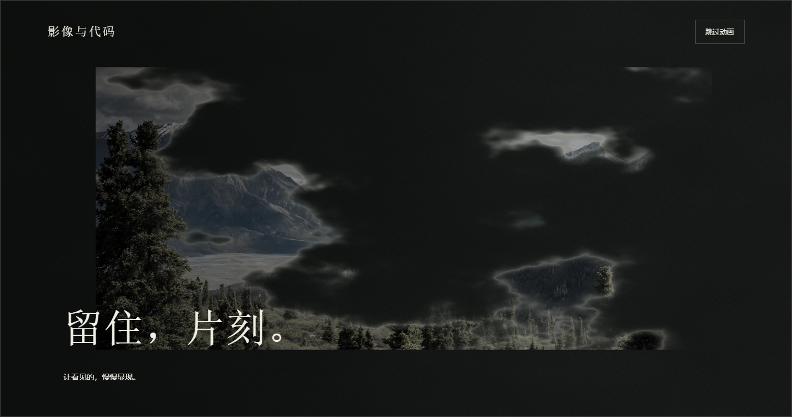
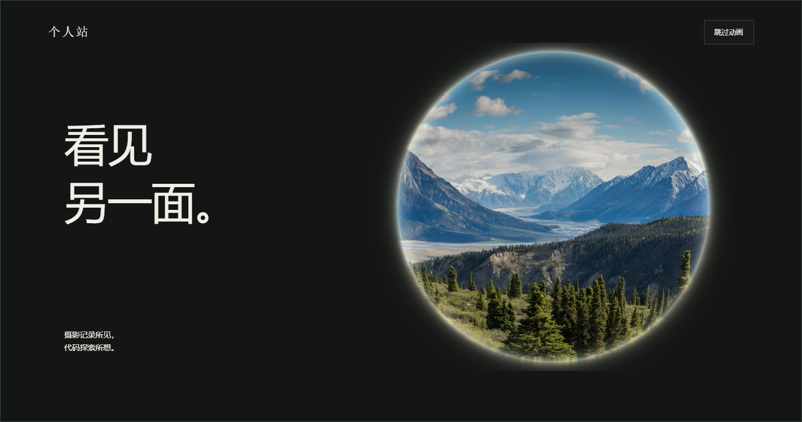
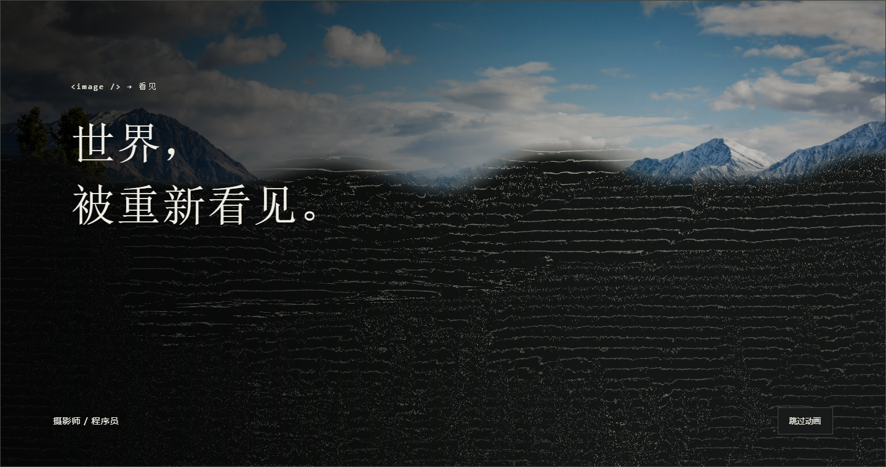

A · 负片显影

从银灰颗粒里显现一张照片，安静、有触感，偏摄影作者气质。
播放 A · 4.2 秒 →首次进入门户完整播放，模块之间使用短转场。这一轮先比较三种成像语言，再把选定的方向与真实页面衔接。

从银灰颗粒里显现一张照片，安静、有触感，偏摄影作者气质。
播放 A · 4.2 秒 →
像走近镜片，看见另一个空间。空间感与视觉冲击更强。
播放 B · 4.6 秒 →
照片先被程序表达为线条，再恢复影像。连接摄影师与程序员。
播放 C · 4.0 秒 →小样支持跳过、暂停、重播和时间轴。当前不改正式站点；照片仍为 Unsplash 演示素材。